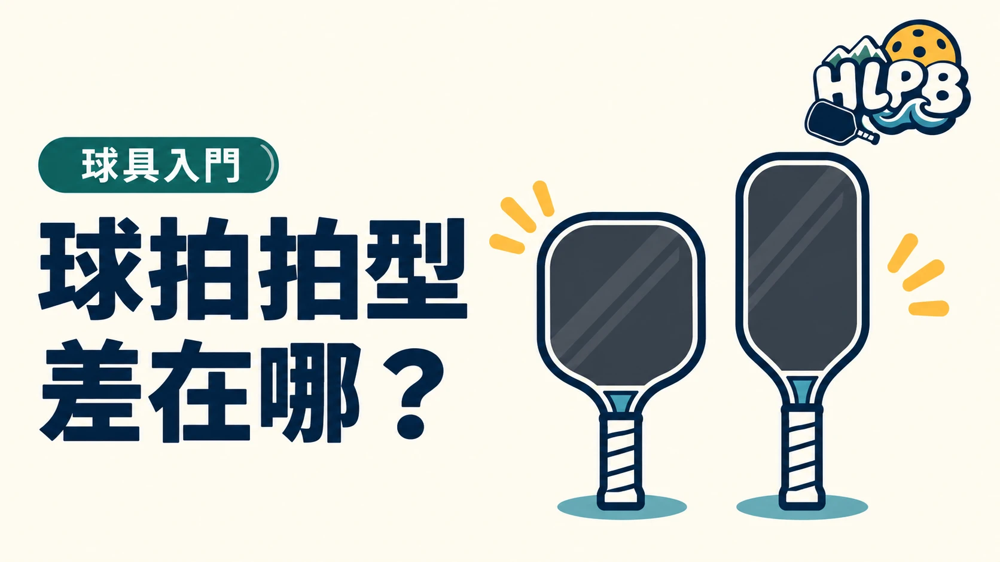

拍型看的是整支拍的長寬與輪廓。各品牌的標準、寬版、加長名稱沒有一組共用尺寸，先比實際數字。
| 拍型方向 | 先看哪個差異 | 同時比較 |
|---|---|---|
| 較寬、較短的輪廓 | 拍面橫向空間 | 重量、內芯與握柄 |
| 較長、較窄的輪廓 | 拍面和整拍長度 | 握柄占用多少長度 |
| 介於兩者之間 | 實際尺寸與比例 | 不能只靠 Hybrid 等名稱判斷 |
為什麼不能只看拍面外觀？
同樣長寬的拍，可以配上不同握柄。握柄較長時，拍面輪廓與擊球空間也需要一起檢查。雙手握拍的人先確認雙手放得下，單手使用也要看自己的握持習慣。
寬版與加長，有什麼取捨？
Selkirk 的拍型指南把較寬輪廓與較長輪廓分開比較。寬度、觸及範圍與操控感都值得看，但實際結果也與重量分布及整拍結構有關。
拍型沒有從新手排到高手的固定順序。 不需要因為球友換成加長拍，自己就跟著換。
把候選拍拿起來，比較握持、連續揮拍，以及幾種基本回球。若兩支拍差很多，先記住最明顯的尺寸與手感差異，再查原廠設計，而不是只留下「這支比較好」的印象。
拍型名稱不是跨品牌共用規格
同樣叫加長或 Hybrid，不同品牌可能使用不同尺寸與握柄比例。比較時先把總長、最大寬度、握柄長度列在一起，再看厚度和重量。外觀輪廓相似，也不能直接推定兩支拍的擊球反應一樣。
甜區不是整片拍面都一樣好打
原廠談甜區時，通常在描述擊球反應較理想的區域或容錯設計，不能只用拍面外框面積算出一個保證值。較寬的輪廓可以提供不同的橫向空間，但偏心穩定度仍需連同整拍結構與重量分布比較。沒有相同方法測試的甜區數據，就先回到實際回球。
| 想比較的方向 | 優先觀察 | 不要省略的另一面 |
|---|---|---|
| 橫向拍面空間 | 實際拍寬與偏心回球感受 | 揮動與正反拍切換是否順手 |
| 較長的整拍輪廓 | 觸及範圍與慣用擊球位置 | 握柄分配、揮重與操控 |
| 介於兩者的拍型 | 實際尺寸而非系列名稱 | 是否真的比現有拍更符合需求 |
拍型試打，先固定其他條件
以相同用球、相近練習內容交替比較，並記錄短球、擋球和底線回球。若候選拍厚度、內芯也不同，結論應寫成整拍的差異，不能說都是拍型造成。不要把寬版視為只給新手、加長視為只給高手，適不適合要回到自己的操作。
來源：Selkirk 拍型指南 官方資料 ↗；尺寸比較順序為 HLPB 建議。資料核對：2026/10/19。
最後查證：2026-10-19｜資料來源：HLPB 編輯整理與正文所列官方資料
返回文章列表